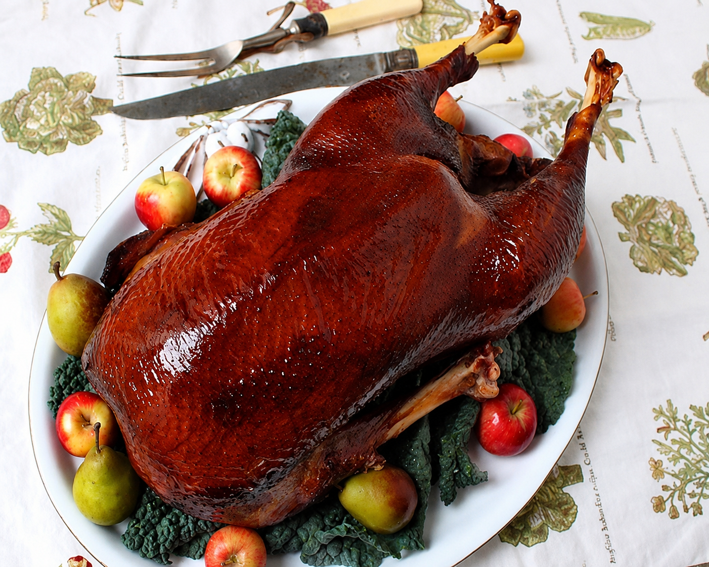

Smoking a goose brings out its rich, bold flavor while keeping the meat tender and juicy. With a simple dry brine, a balanced rub, and slow cooking, this recipe delivers a beautifully smoked bird with crisp skin.
Ingredients
Goose
- 1 whole goose (10–12 lbs.), thawed
- Kosher salt, for dry brining
- 2 tablespoons olive oil or melted butter
Dry Rub
- 2 tablespoons kosher salt
- 1 tablespoon black pepper
- 1 tablespoon smoked paprika
- 1 tablespoon garlic powder
- 1 tablespoon onion powder
- 1 teaspoon cayenne pepper, optional
- 1 teaspoon dried thyme
- 1 teaspoon dried rosemary
- 1 teaspoon brown sugar, optional
For Smoking
- Apple, cherry, or hickory wood chips
- Water for the smoker pan
Instructions
- Rinse the goose, remove the giblets, and pat it dry. Season generously with kosher salt and refrigerate uncovered for 12–24 hours.
- Preheat the smoker to 225°F and fill the water pan. Soak the wood chips for about 30 minutes if your smoker requires it.
- Mix the dry-rub ingredients. Lightly coat the goose with olive oil or melted butter, then apply the rub evenly.
- Optional: Stuff the cavity with citrus, garlic, and herbs for added flavor.
- Place the goose breast-side up in the smoker and insert a thermometer into the thickest part of the breast.
- Smoke for 4–5 hours, until the breast reaches 165°F and the thighs reach 175°F.
- For crispier skin, increase the heat to 350°F for the final 20–30 minutes, or finish the goose in the oven.
- Remove the goose and let it rest for 15–20 minutes before carving.
Serve
Serve with roasted vegetables, potatoes, wild rice, cranberry sauce, or crusty bread.
Jason's Outdoor Tips
- Dry brining helps create crisp skin and deeper flavor.
- Maintain a steady smoker temperature for the best results.
- Apple and cherry wood produce a mild smoke; hickory gives a bolder flavor.
- Save the drippings to make a rich smoked gravy.
A properly smoked goose is one of the finest meals a hunter can put on the table. The hunt does not end when the birds are picked up—it continues around the smoker, the carving board, and the dinner table.